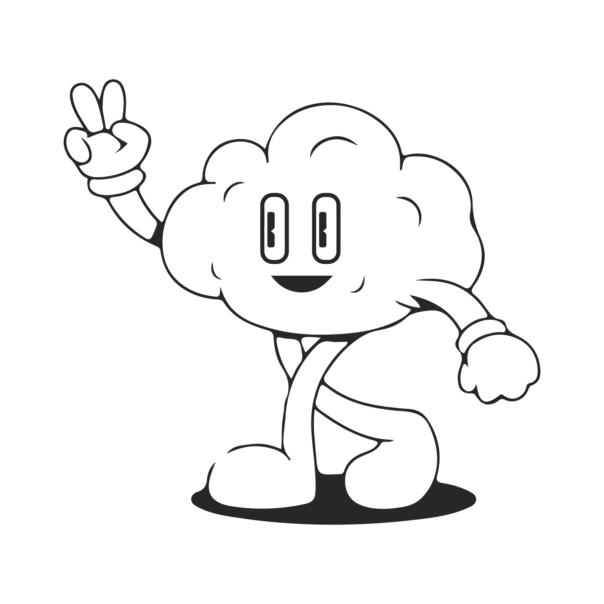

Sound Designer & Infrastructure Engineer
Owner of LUFS Audio — professional audio for clients including Hinge Health and xAI: interactive UX sound, Wwise / Unity pipelines, and AI voice in six languages. I also run a 100+ container homelab across ~10 machines on a Tailscale zero-trust mesh, managed with Docker Compose stacks and a custom automation agent. CompTIA A+, Network+, Security+ in progress — expected 2026.
What I do
AI & audio tooling bridge: ffmpeg-mcp-server (MCP), lufs-workchain (agent-first audio pipeline), local AI audio servers (qwen3-tts, stable-audio-open), and open-source agent frameworks — I build the automation that makes both sides of my work scale.
Find my work